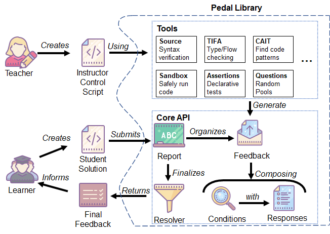

Introduction¶
Good feedback is hard to come by. Imagine you are a student submitting your first program, and this is what the system spits out:
Traceback (most recent call last):
File "instructor.py", line 12323, in _special_custom_helper:
self.assertEqual(result, 5)
AssertionError: 7 != 5
This might be disorienting, without any other context, right?
We believe that autograding feedback should be more than just unit tests. Program analysis can give us deeper insight into students’ issues, and allow us to write more accurate feedback. Research has shown that many existing error messages are unhelpful - can’t we provide more context, details, and pedagogically-friendly language? Our goal is to make it easier for instructors to write sophisticated feedback and make measurable progress towards helping learners.
The Pedal library is a pure Python library that let’s instructors create grading scripts that analyze a students’ submission to provide custom feedback. Using declarative Python statements, the instructors specify conditions that should trigger feedback responses. The system chooses the most appropriate feedback (in addition to tracking alternatives). Since Pedal itself is written in Python, it is compatible with a wide range of autograding platforms - as long as they allow you to execute arbitrary Python code.
An Example¶
Let’s look at an example.
def add_prices(books):
for book in books:
total = book + books
return total
The student tried to write a function to sum up a list of numbers, but their code has a number of errors - they failed to initialize a variable, they added the list to the iteration variable, they returned inside of a loop… There’s a lot wrong here! Pedal could detect many of these scenarios and provide different kinds of feedback.
Below you can see a minimalistic Instructor Control Script that, when loaded in one of our custom Environments, will automatically provide feedback on not only syntax and runtime errors, but also do typechecking, liveness checking, and several custom instructor checks.
from pedal import *
# Partial credit for good progress
if find_asts("For"):
compliment("Good, you have a `for` loop!", score="+10%")
# Give feedback by finding a common problem-specific mistake
matches = find_matches("for _expr_ in _list_:\n"
" ___ = ____ + _list_")
if matches:
explain("You shouldn't use the list inside the for loop.",
label="list_inside_loop", title="List Inside Loop")
# Check they defined the function with the right type
ensure_function(student, 'add_prices', arity=1, returns=int)
# Unit test their function
assert_equal(call('add_prices', [1,2,3]), 6)
An instructor could also grasp more control of the grading process by running without a Pedal Environment. This may look a little more complex, but you can see clearly all the phases of checking that a BlockPy program can do:
from pedal import *
# Check for syntax errors
verify()
# Generic, friendly feedback on undeclared variables, among others
tifa_analysis()
# Partial credit for good progress
if find_asts("For"):
compliment("Good, you have a `for` loop!", score="+10%")
# Give feedback by finding a common problem-specific mistake
matches = find_matches("for _expr_ in _list_:\n"
" ___ = ____ + _list_")
if matches:
explain("You shouldn't use the list inside the for loop.",
label="list_inside_loop", title="List Inside Loop")
# Run students' code in a sandbox
student = run()
# Check they defined the function with the right type
ensure_function(student, 'add_prices', arity=1, returns=int)
# Unit test their function
assert_equal(call('add_prices', [1,2,3]), 6)
# Have the resolver choose some feedback
resolve()
Architecture¶
The diagram below captures the major components of Pedal with a little detail.
Teachers begin by creating an Instructor Control Script, like the one above, using Pedal’s selection of tools. This script should be associated with a problem on your autograding platform, and students can submit a solution for that question. The tools can analyze the student’s submission for conditions that warrant specific responses. The responses and their conditions are then encapsulated into raw Feedback, which is stored in a centralized Report. At the conclusion of the script, a Resolver is used to choose the most appropriate final feedback (or feedbacks), which are then sent back to the student via the autograder.